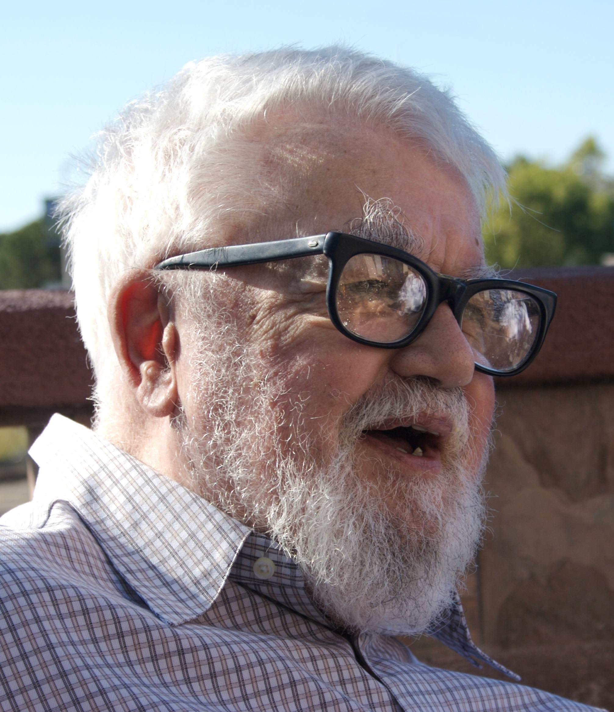

John McCarthy
Data de Nascimento: 4 de setembro de 1927
País: Estados Unidos da América
Prêmios: Prêmio Turing (1971), Prêmio Pioneiro da Computação (1985), Prêmio Kyoto (1988), Medalha Nacional de Ciências (1990), Medalha Benjamin Franklin (2003)
John McCarthy foi um cientista da computação estadunidense. Conhecido pelos estudos no campo da inteligência artificial e por ser o criador da linguagem de programação Lisp. Recebeu o Prêmio Turing de 1972 e a Medalha Nacional de Ciências dos Estados Unidos de 1991.